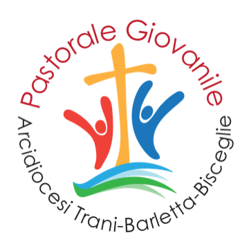

Pastorale Giovanile
Arcidiocesi di Trani-Barletta-Bisceglie
Diocesi
Meeting ed eventi diocesani
Scegli la tua città
Trani
Calendario ed eventi
Barletta
In arrivo
Bisceglie
In arrivo
Corato
In arrivo
Forania
In arrivo